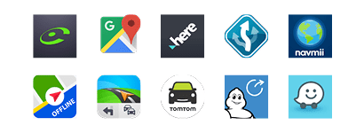
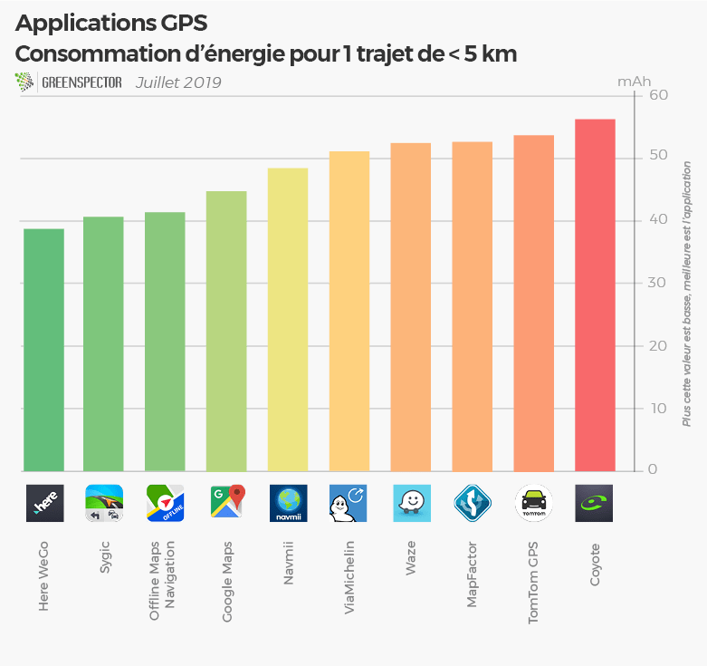
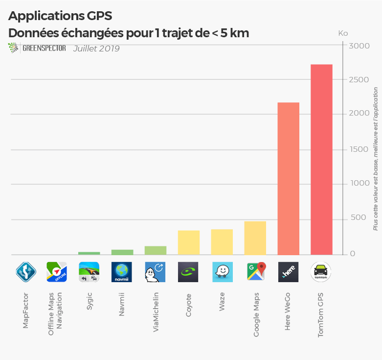
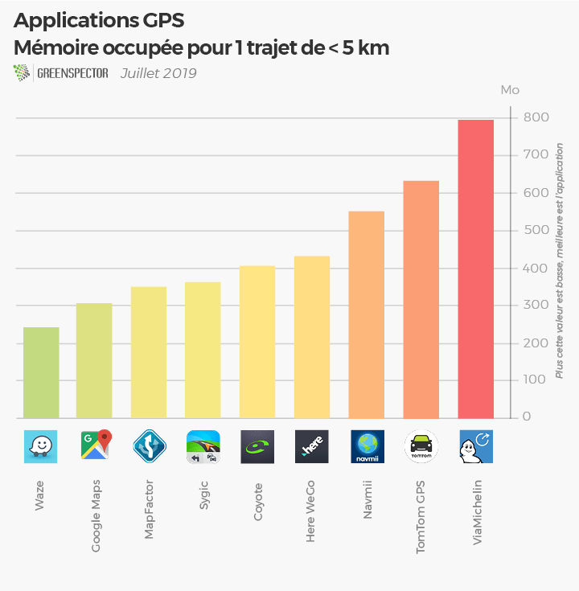
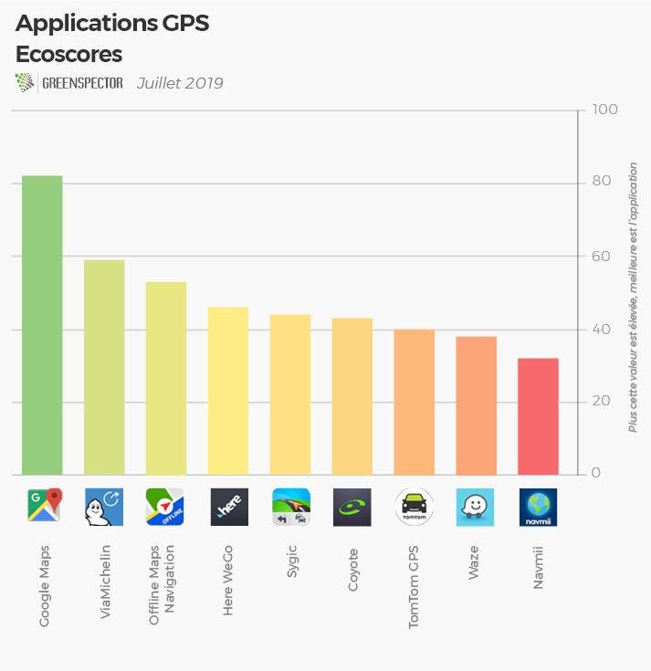

Les applications de navigation sur smartphone sont nos outils quotidiens pour une navigation en voiture, vélo, ou à pied. On les utilise régulièrement dans le cadre de nos activités professionnelles ou personnelles. C’est aussi un outil précieux dans le cadre des vacances. Il n’est pas rare de posséder deux applications installées.
L’activité de géolocalisation fine peut être activée sur votre smartphone (vs normale) mais elle vous en coûtera en moyenne une consommation de batterie qui double, voire triple selon les applications et les cas d’utilisation ! Attention donc à ce paramètre pour un niveau de précision qui sera dans la plupart des cas, inutile. La particularité de ces outils, c’est qu’ils peuvent fonctionner en online [en ligne] et d’autres ne fonctionnent qu’en offline [hors-ligne] avec pré-chargement des données cartographiques au préalable de la navigation. Quoiqu’il arrive des écarts importants existent entre ces 10 applications pour un résultat de déplacement et d’information tout à fait comparable. A vous de choisir !

Pour cette étude sur les applications GPS, GREENSPECTOR a analysé les applications les plus utilisées sur le Google Play Store.
Consommation d’énergie pour un parcours de 3 minutes (mAh)

En ce qui concerne la consommation de batterie pour un parcours simple réalisé sur une durée de 3 minutes correspondant à un déplacement simulé en moyenne de 40 km/h, nous observons des consommations très variées entre les différentes applications, 45 % de différence de consommation entre Here WeGo et Coyotte, tous les deux étant dans la catégorie des applications cartographie online.
Volume de données échangées pour un parcours de 3 minutes (Ko)

En termes de données, Here WeGo et Tomtom GPS sont de loin les plus consommateurs avec un volume de données entre 2 et 3 Mo. TomTom GPS étant pour le coup à la fois consommateur en cartographie initiale (1,3 Go pré-chargés) mais également en données durant la navigation. ViaMichelin est le moins consommateur de données pour les applications avec cartographie online avec 113 ko de données.
Mémoire occupée pour un parcours de 3 minutes (Mo)

70 % d’écart sur la mémoire utilisée entre Waze et ViaMichelin pour effectuer ce parcours dans un panel où toutes les applications (sauf OfflineMaps Navigation) consomment entre 241 Mo et 800 Mo. L’application Waze moins consommatrice pourra fonctionner sur des plateformes plus anciennes alors que l’application ViaMichelin sera plus exigeante sur les pré-requis mémoire du téléphone.
Ecoscore sur un parcours standardisé sans déplacement

L’EcoScore reflète la consommation de ressources (CPU, mémoire, data, …) et d’énergie sur le premier écran de l’application. La palme revient ici à Google Maps qui obtient une note de 81 sur 100 ! Dans les applications lourdes en consommation de ressources et énergie TomToom GPS, Waze et Navmii sont beaucoup plus ressourcivores. MapFactor n’a pas été classée car l’application a un comportement différent sur son premier écran par rapport aux autres applications du panel.
Méthodologie
| Application | Version | Téléchargements | Note Playstore | Offline | Téléchargement préalable (Go) | Consommation d’énergie (mAh) | Données échangées (Mo) | Mémoire occupée (Mo) | Ecoscore (/100) |
|---|---|---|---|---|---|---|---|---|---|
| Coyote | 11.1.920 | 1 000 000+ | 3.9 | Non | 0 | 56.3 | 0.342 | 431 | 43 |
| Google Maps | 9.67.1 | 5 000 000 000+ | 4.3 | Non | 0 | 44.8 | 0.478 | 304 | 82 |
| Here WeGo | 2.0.13173 | 10 000 000+ | 4.4 | Non | 0 | 38.8 | 2.2 | 343 | 46 |
| MapFactor | 5.0.63 | 10 000 000+ | 4.5 | Oui | 1.2 | 54.6 | 0 | 0 | N/A |
| Navmii | 3.7.13 | 10 000 000+ | 4.0 | Oui | 2.2 | 48.5 | 0.069 | 550 | 32 |
| Offline Maps Navigation | 17.9.4 | 10 000 000+ | 4.7 | Oui | France=1.4 Région= 10-200 Mo | 41.5 | 0 | 796 | 53 |
| Sygic | 18.1.4 | 50 000 000+ | 4.4 | Oui | France=2 Région= 7-250 Mo | 40.8 | 0.035 | 241 | 44 |
| TomTom GPS | 1.17.7 | 10 000 000+ | 4.1 | Oui | 1.3 | 55.9 | 2.75 | 352 | 40 |
| ViaMichelin | 8.3.3 | 5 000 000+ | 4.3 | Non | 51.1 | 0.113 | 633 | 59 | |
| Waze | 4.52.5.5 | 100 000 000+ | 4.6 | Non | 52.5 | 0.364 | 404 | 38 |
Les mesures ont été réalisées par notre laboratoire sur la base d’un protocole standardisé : Smartphone Nexus 6, Android 6, Wi-Fi, luminosité faible. 4 campagnes ont été réalisées et la valeur retenue est la moyenne de ces 4 mesures.
Pour réaliser ces mesures, nous avons mesuré à la fois un parcours technique avec une phase de chargement de l’application, une phase d’inactivité premier-plan avec écran affiché (idle foreground) et une phase d’inactivité avec écran en arrière-plan (idle background). Cette étape a été réalisée sans déplacement. Seules 9 applications ont été classées sur les 10 en ecoscores car comparables sur leur fonctionnement de premier écran. Pour mesurer la consommation en déplacement de ces outils, nous avons simulé un déplacement de moins de 5km avec un simulateur de données GPS qui permet d’obtenir un résultat très proche d’un résultat réel.
Retrouvez notre dernier palmarès : Consommation des 30 apps les plus populaires au monde
Des idées d’étude comparative ? Contactez-nous !